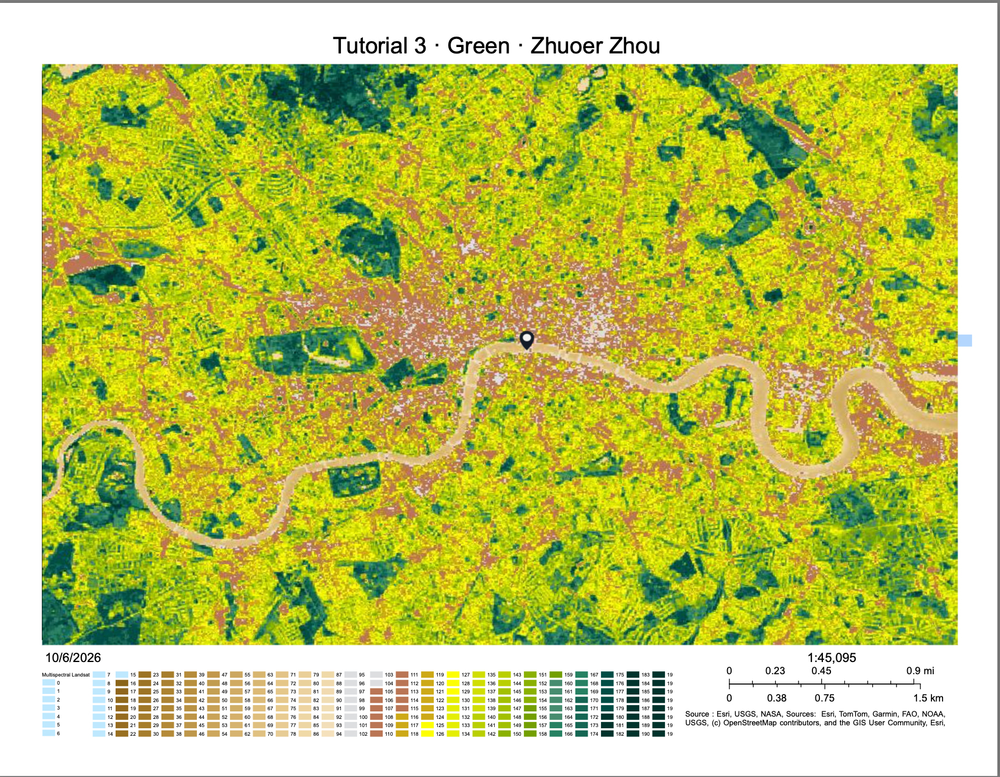

Week 04 · October 2026
What the Green Means
The question
What is the green at my site, St James’s Park in central London, actually made of, and how does its pattern, scale, and density compare with greener and more built-up areas of the city?
The data
I used Landsat 8 imagery with a 30 m pixel size, acquired on July 30, 2024, with a reported scene cloud cover of 0.07. I used NDVI, calculated from the red (Band 4) and near-infrared (Band 5) bands. The Landsat service is publicly accessible through ArcGIS without a token. My site’s NDVI was 0.43.
The method
I used the NDVI Raw processing template to obtain the numerical index and NDVI Colorized to visualize its spatial pattern. For the threshold exercise, I first used a lower bound of 0.5, then tested 0.6 and 0.4. The 0.5 threshold was useful for identifying areas with relatively high vegetation-index values, while changing the threshold demonstrated that the classification changes substantially with the cutoff. The final map uses colorized NDVI with a legend and scale bar.
The evidence

My site has an NDVI of 0.43, while the selected comparison places were Hyde Park (0.69), Primrose Hill (0.66), and Canary Wharf (0.48). The relatively lower value at St James’s Park may partly reflect its central and compact urban setting; larger and more continuous vegetated areas toward the outskirts of London appear to contain more high-index pixels.
What I found
My high-index, low-habitat example is the City of London financial district. Some pixels there remained above the 0.6 NDVI threshold, despite the area being a highly built-up commercial environment rather than a natural habitat. This illustrates that a high NDVI value can occur in a dense urban environment and does not necessarily mean that the area functions as habitat. In contrast, some areas along the Thames riverbank remained dark or had relatively low NDVI values, but these areas can still have ecological value as riverside or intertidal environments. At St James’s Park, the green appears to consist mainly of managed lawns, trees, and planted vegetation, rather than continuous natural habitat.
What this does not show
A high NDVI value should not be interpreted as evidence that an area contains more or better habitat. I am using NDVI to stand for the amount of living habitat at my St James’s Park site, and it might fail because a 30 m pixel can combine managed lawns, trees and planted areas with surrounding built surfaces, producing a relatively high vegetation index without showing whether the vegetation actually functions as habitat.
AI use: AI-assisted for organizing and checking the HTML and journal wording using ChatGPT. I checked the map, imagery date, NDVI values, symbology choices, and interpretations myself.